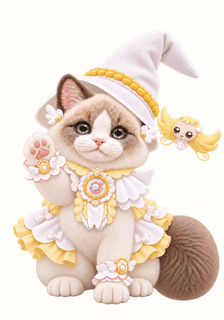

<!doctype html><meta charset="utf-8"><title>동작 기준 비교</title><style>body{font:14px system-ui;background:#fffdfa;color:#51444d}main{display:flex;gap:28px}img{width:224px;height:320px}figure{margin:16px 0}select{padding:8px}</style><label>동작 선택 <select id="state"><option value="waving">완료 인사 · 2.4초</option><option value="jumping">점프 · 2.4초</option><option value="failed">놀람 · 3.2초</option><option value="waiting">기다림 · 3.2초</option><option value="running">하트 언록 · 2.4초</option><option value="review">하트 확인 · 3.2초</option><option value="sleeping">잠들기 · 6.4초</option></select></label><main><figure><figcaption>하나 · 기준 동작</figcaption></figure><figure><figcaption>아무 · 캐릭터</figcaption></figure><figure><figcaption>아무 · 란 · 효과</figcaption></figure></main><script>document.querySelector('#state').onchange=e=>{const s=e.target.value;document.querySelector('#baseline').src=`reference/motion-baseline/hana-${s}.gif`;document.querySelector('#candidate').src=`motion/${s}-v1/character-only-light.gif`;document.querySelector('#complete').src=`motion/${s}-v1/${s}-light.gif`}</script>
